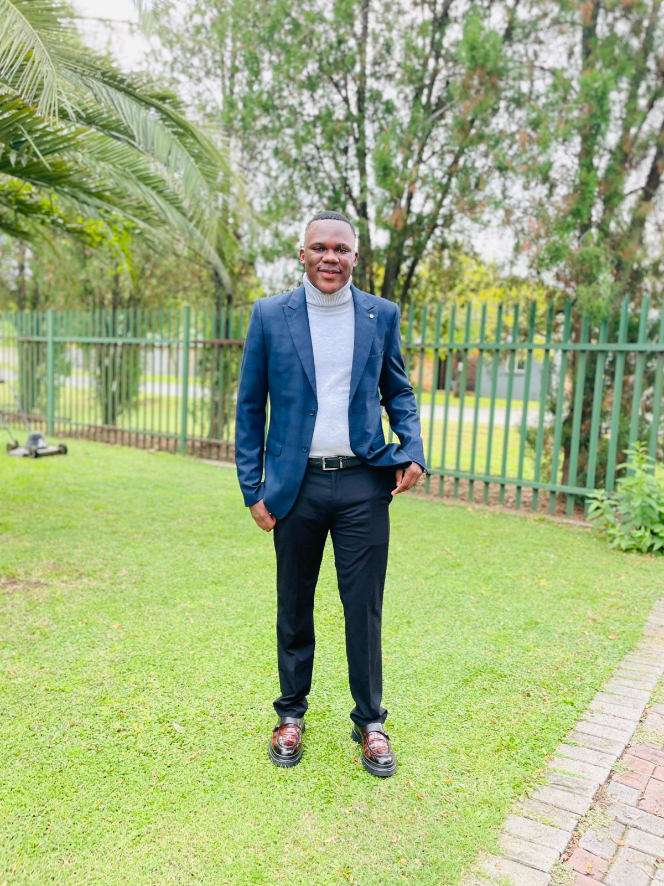

Hi, I'm Codnell Chabalala
Systems Analyst
Graduate in Computer Systems Engineering with experience as a Junior Data Scientist. Skilled in cloud computing, networking, software development, and data analysis.


About Me
I am a Computer Systems Engineering graduate with practical experience in cloud computing, networking, software development, and data analytics. I have worked in both academic and workplace environments providing troubleshooting, system testing, technical support, and asset handling.
With exposure to data science, machine learning, and IT infrastructure, I aim to contribute meaningfully to technical teams while continuously developing advanced industry skills in cloud and systems engineering.
- Glenwood, Durban, South Africa
- Diploma in Electrical Engineering – Computer Systems
- Systems Analyst at Icebolethu Group
- Cisco CCNA (3 modules)
Professional Experience
- Perform system maintenance to keep business systems stable, up to date, and running reliably.
- Carry out system testing to verify functionality and identify defects before and after changes are deployed.
- Gather and document business requirements, translating stakeholder needs into clear technical specifications.
- Conduct business analysis to understand processes and recommend system improvements.
- Contribute to software development, building and enhancing features to meet business requirements.
Provided technical support and maintenance for automated teller machines (ATMs), ensuring reliable cash handling operations, system performance, and hardware functionality.
- Configured and calibrated ATM cash cassettes to ensure accurate cash dispensing and minimize transaction errors.
- Installed, assembled, and replaced ATM hardware components including card readers, cash dispensers, and internal peripherals.
- Performed system diagnostics and software testing to identify faults and ensure optimal system performance.
- Conducted preventive maintenance checks to reduce downtime and improve machine reliability.
- Troubleshot and resolved basic hardware and software faults, escalating complex issues when required.
- Ensured compliance with operational and security standards in handling ATM systems.
Completed a multidisciplinary internship across IT Support, Software Development, Cloud Platforms, and Data Analytics, contributing to system improvements, technical support operations, and business intelligence reporting.
- Provided end-user IT support by diagnosing and resolving hardware, software, and network connectivity issues.
- Installed and configured operating systems, applications, and internal tools across multiple workstations.
- Assisted in debugging, testing, and optimizing web-based applications to improve system performance and usability.
- Performed data cleaning, transformation, and validation using Python to support accurate reporting and analytics.
- Conducted data analysis to identify operational inefficiencies and support data-driven decision-making.
- Developed and maintained documentation for technical issues, troubleshooting procedures, and system improvements.
- Worked with Microsoft Azure for basic cloud deployment, resource management, and system hosting.
- Utilized cPanel for web hosting management, including domain configuration, file management, and database administration.
- Collaborated with cross-functional teams to support system deployment and enhancements.
- Gained exposure to networking concepts including IP configuration, connectivity troubleshooting, and system integration.
Delivered comprehensive IT support, cloud services administration, software development, and data analysis solutions, improving system efficiency, application performance, and organizational productivity.
- Provided first-line technical support for hardware, software, and network-related issues, ensuring minimal system downtime.
- Installed, configured, and maintained Windows and Linux operating systems across multiple user environments.
- Administered Microsoft 365 services including user account management, email configuration, Teams setup, and access control.
- Worked with Microsoft Azure for cloud-based services, system deployment, and infrastructure support.
- Managed hosting environments using Afrihost, including domain setup, hosting configuration, and website deployment.
- Developed and maintained internal web applications using HTML, CSS, JavaScript, PHP, and Laravel to streamline business processes.
- Designed and implemented backend functionality using Python and Flask, including automation scripts and system integrations.
- Managed and queried relational databases using SQL for efficient data storage, retrieval, and reporting.
- Performed data analysis and created reports using Microsoft Excel and Power BI to support business insights and decision-making.
- Monitored system performance, identified bottlenecks, and implemented solutions to improve efficiency and reliability.
- Conducted structured troubleshooting and root-cause analysis to resolve recurring technical issues.
- Maintained technical documentation and supported knowledge sharing across teams.
- Collaborated with stakeholders to gather requirements and translate them into technical solutions.
Education
Diploma in Electrical Engineering – Computer Systems
Cisco CCNA
References
Let's Work Together
Want to talk systems, software or data? Download my CV or get in touch.